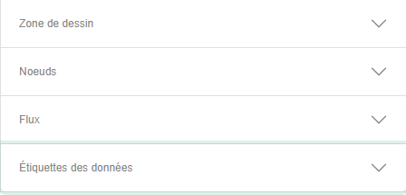
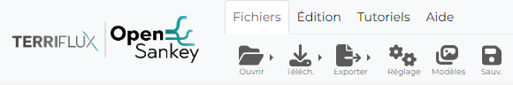

Sommaire:
Le menu de configuration est un menu accordéon contenant tous les outils nécessaires à l’édition de diagrammes de sankey.

La barre d’édition est un ensemble de bouton permettant de faciliter certaines foncitionnalités d’édition du diagramme et d’appliquer des filtre
